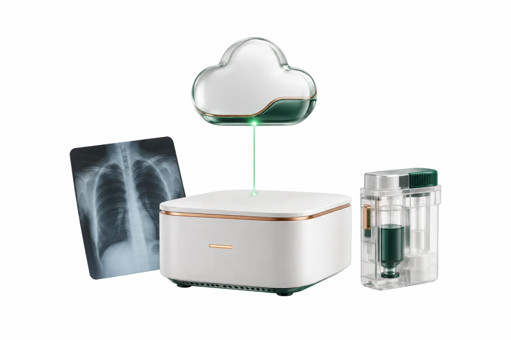

Getting started
一歩目は、
私たちが一緒に踏み出します。
「頑張って踏み出してください」とは言いません。こちらが全力で支えます。使う技術のおかげで、先生の側の手間はそれほど大きくありません。

Steps
導入までの流れ
全部を一度に入れ替えることは勧めていません。今の仕組みと並べて動かし、確かめてから切り替えます。
- 資料請求
LINE（@310unbcy）で病院名・院長名・開業前の方は開業予定の時期をお送りください。確認のうえ資料と動画をお届けします。
- 画面のデモ
オンラインで、架空のデータを使って実際の画面を動かしてお見せします。
- 費用と業務の棚卸し
毎月どこにいくら払っていて、どこで時間がかかっているかを一緒に書き出します。
- 無料でお試し無料
困っている所から1つか2つ。スタッフに「ここが不便」を出してもらう期間です。
- ご契約とデータ移行
病院の決まりごとを質問票やいまお使いの用紙からうかがって設定し、データを移します。
- 並べて動かし、切り替える
今の仕組みと並べて確かめてから切り替え、切り替え後2週間は毎日様子を見ます。
Request
まずは資料を、
LINE で受け取ってください。
病院名・院長名・（開業前の方は）開業予定の時期をお送りください。確認のうえ、詳しい資料と画面の動画をお届けします。
LINE で資料を受け取る資料請求の流れを見る
LINE ID：@310unbcy ／ LINE を使わない方は info@lamarck.co.jp へ